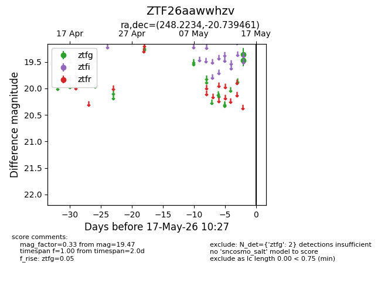
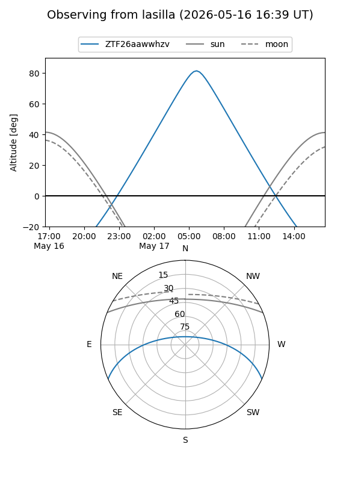
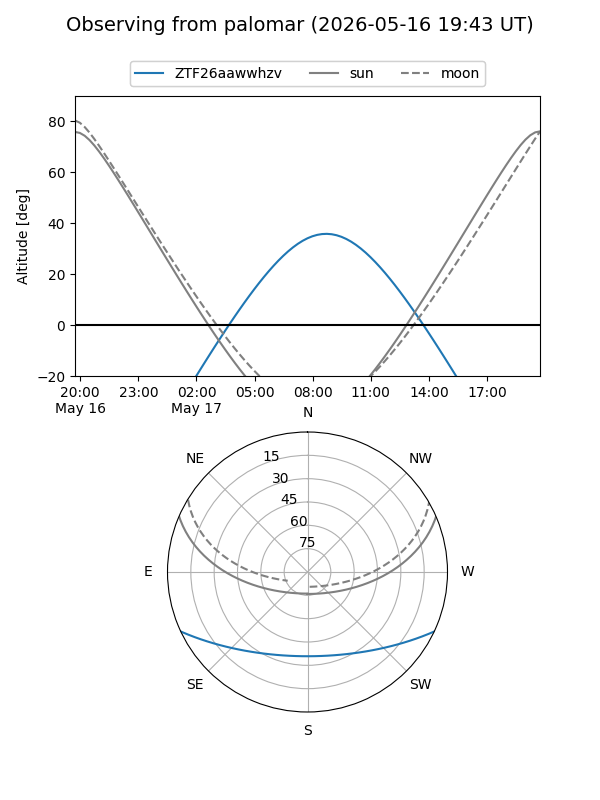

ZTF26aawwhzv
Target ZTF26aawwhzv at 2026-05-17 10:29
Aliases and brokers:
FINK: link
Lasair: link
ALeRCE: link
alt names
ZTF26aawwhzv (ztf,fink_ztf)
Coordinates:
equatorial (ra, dec) = 248.2234,-20.73946
equatorial (HMS+DMS) = 16:32:53.62,-20:44:22.06
galactic (l, b) = (357.0059,+18.15474)
Flags:
Photometry:
last ztfg=19.47
2 ztfg detections
Lightcurve

Visibility


Additional plots